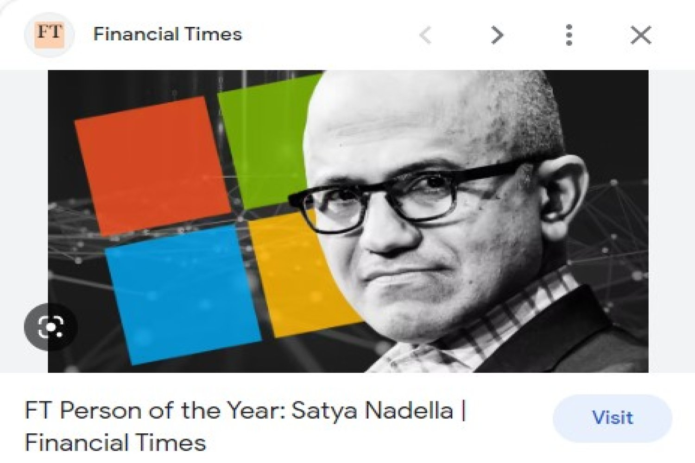
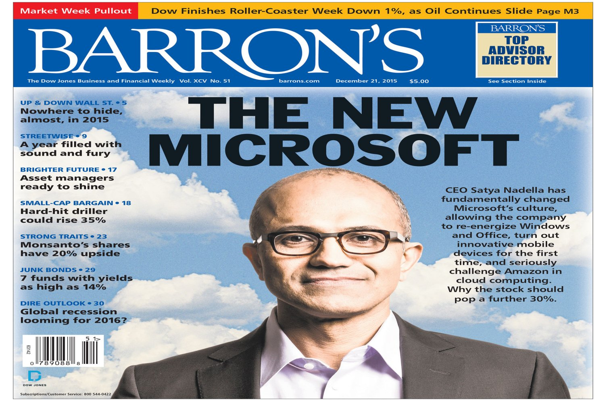
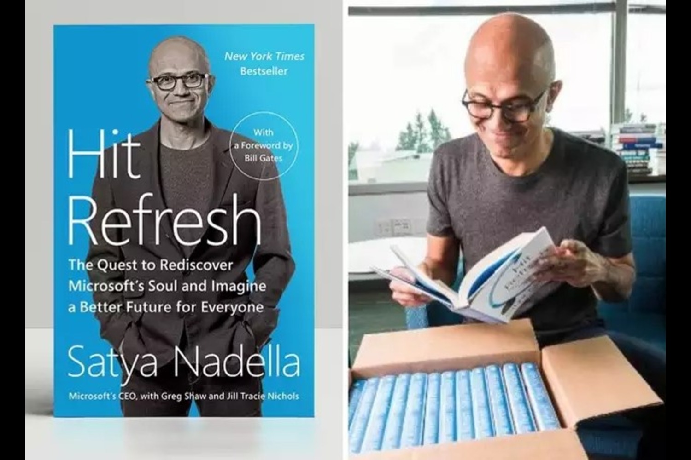

In 2019, Nadella was named Financial Times (FT) Person of the Year, "Microsoft was at risk of technological irrelevance but the chief executive has presided over an era of stunning wealth creation". Year after year, Nadella finds his name in Barron's World's 30 best CEOs list. Nadella's autobiography 'Hit Refresh' explores his life and his career at Microsoft. It also elaborates on how technology will shape the future.
  Nadella is a board member of Fred Hutchinson Cancer Research Center and a member of the board of trustees at the University of Chicago. All the proceeds from his book 'Hit Refresh' were given to Microsoft Philanthropies.